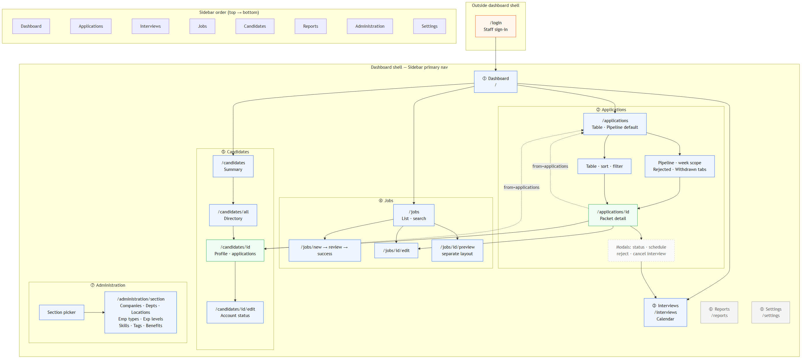

Market squeeze
Lean TA teams are pushed toward tools they mis-buy or outgrow—with no dedicated ops admin when either fails.
Product Design · UX · AI-assisted build
TalentHub is an applicant tracking system for SME / SMB People teams—one to a few recruiters, no TA ops admin—who need mid-market triage quality without six-week implementations or $10K+ stacks.
01 · Context
Enterprise tools bring structure at the cost of setup and admin. Budget tools win on price but break on pipeline honesty. TalentHub targets the gap.
Lean TA teams are pushed toward tools they mis-buy or outgrow—with no dedicated ops admin when either fails.
Mid-market workflow depth—cohort pipeline, governed status, packet page, scheduling—at SMB scope and complexity.
Staff applications workflow: how recruiters scan volume, decide, and schedule without losing person, job, or document context.
02 · Research
Netnographic synthesis of public recruiter and candidate discourse (May 2026)—directional, not statistically representative.
“Recruiters describe ATS products as click-heavy and designed without daily input. Candidates describe hiring as opaque, impersonal, and silent after apply.”
Netnographic research · TalentHub
Cited candidate surveys and netnographic theme severity · May 2026 · directional
High / medium / critical counts from public discourse
Sources: HireFormly · LiveCareer · HR Dive · HR.com / Tracker RMS · Full netnographic report →
When UX fails, parallel spreadsheets persist—especially painful when there is no TA ops admin.
Status says “Interview scheduled” but no meeting exists—erodes trust in the funnel.
Most candidates rarely hear back; silence drives more resentment than rejection.
03 · Approach
Core loop only—apply, triage, interview, decide. No paid modules a 30-person company will never use.
Resume and packet in one or two actions. Honest pipeline state. No “back to Excel” days.
Time-to-value in days or weeks—sensible defaults, minimal admin configuration.
Governed transitions and audit—not CRM nurture or reporting suites on day one.

Each increment: pick a backlog item → expand spec → implement → validate against WCAG and privacy intent → ship. Documentation and code stay aligned via a single PRD and TH-coded backlog.
04 · Solution
Samples from lo-fi wireframes and as-built UI. Full platform spans jobs, candidates, and administration—this case study centres the applications slice.
Problem: All-time Kanban creates ambient noise; recruiters can’t focus on this week’s cohort.
Design: Pipeline filters by submission week (UTC). Past and current week only—future weeks disabled. Table view remains for all-time list work.

Problem: Job, person, documents, and history live on disconnected surfaces.
Design: One adjudication anchor—who, which role, submission answers, CV/cover letter, status timeline, schedule interview—with links out to candidate profile and job edit.

Problem: Application black hole and long apply friction.
Design: Public portal for discovery; signed-in workspace for CV library, apply wizard, and status visibility—without duplicating auth on the marketing site.



Application as unit of work—throughput on /applications, depth on packet page, person history via candidate profile with return paths preserved.
05 · Impact
Qualitative signals from workflow redesign—replace with your metrics when available.
Multiple navigations to open a full application packet
AfterSingle packet page
All-time pipeline mix
AfterWeek cohort focus
Status vs calendar mismatch
AfterSchedule gate + calendar
Ad-hoc status changes
AfterAudit + undo + rules
06 · Reflection